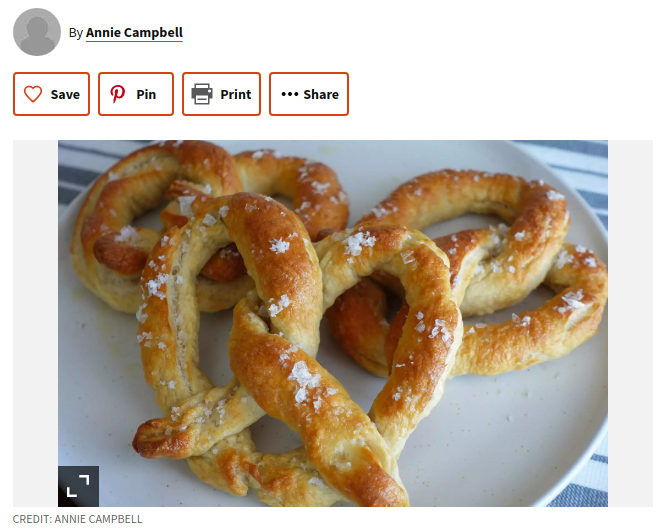

Annie's 2 Ingrediant Pretzel Recipe

Annie's 2 Ingrediant Pretzel Recipe
Homemade pretzels using only 2 ingrediant dough.
Ingrediants
- 1 cup of self rising flour + more for kneading
- 1 cup of plain greek yogurt
- 3 tablespoons of melted butter
- 1 teaspoon of coarse salt or as needed
Steps
- bring 6 cups of water to a low boil in a large pot
- add baking soda to the pot
- preheat oven to 350 degrees Fahrenheit = 175 degrees Celsius.
- grease a baking sheet
- mix 1 cup flour and grek yogurt in a medium bowl until shaggy dough forms
- transfer dough to a surface dusted with more self rising flour
- knead dough for 8 to 10 minutes
- add more flour as needed if the dough is too sticky
- cut the dough into 4 equal pieces
- roll each dough segment into a long thin rope 22 to 24 inches in length
- twist the rope into a pretzel shape by taking two ends and twisting them around each other, securing both ends side by side onto the center portion
- carefully drop each pretzel into the water and boil for 2 to 3 minutes or until pretzel floats to the top
- drain the paper towels on a cooling rack
- transfer to the prepared baking sheet
- bake in preheated oven for 20 minutes
- remove from oven and increase oven temperature to 425 degrees Fahrenheit = 220 degrees Celsius
- brush pretzels with melted butter
- continue to bake for 4 to 5 minutes or until pretzels turn golden brown
- brush pretzels with remaining butter and top with salt